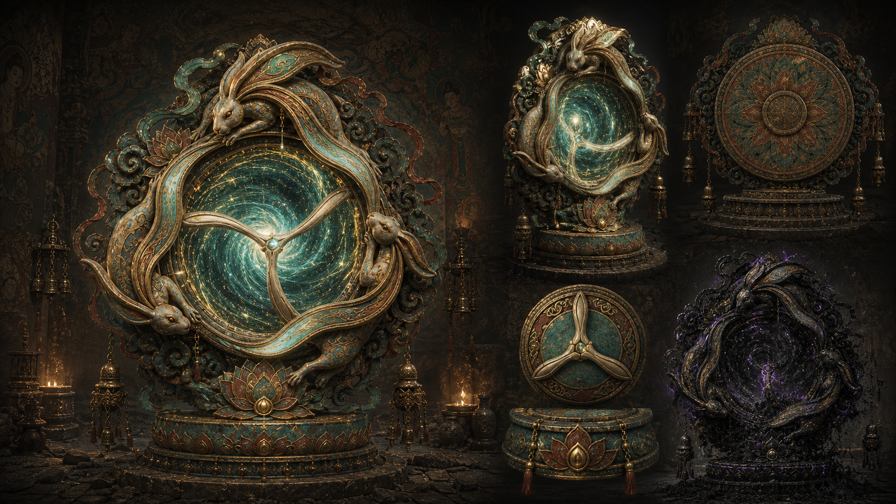

黑沙、金经、壁画和雷鼓构成游戏的第一视觉记忆。

类型三人小队 PvPvE
宣传重点CG / 玩法 / 美术资产
核心体验听声 / 取舍 / 撤离
美术方向暗黑敦煌幻想
把丝路纹样转译为门区、钥印和撤离规则。
02 听声搜打撤以声音辨位替代重 UI，形成紧张但易懂的一局循环。
03 三人自然分工不绑职业，围绕标记、搜物、守门即时协作。
04 高清资产矩阵场景、角色、怪物、机关、掉落物可直接用于提案展示。
CG Trailer
让观众先看见黑沙、金经、雷声与三兔门。
这支双语 CG 预告片承担官网的情绪入口：金经启封、壁画复苏、雷声逼近与三人小队撤离目标会在第一时间被观众感知。页面后续再承接到可执行玩法、美术资产和制作拆解。
声音、遗物、追击和撤离门被压缩成一条可理解的宣传叙事。
预告片之后直接进入玩法和美术资产库，方便评审快速看到量产方向。
Game Pitch
把“敦煌壁画探险”压缩成一条清晰可执行的搜打撤闭环。
玩家不需要理解复杂职业协作，只要在一局内完成三件事：听出价值的位置，判断该拿多少，带着队友从门里撤出去。雷神、黑沙、三兔共耳和壁画宝物都服务于这个闭环。
听声找价值
铜铃、风沙、壁面回响和怪物噪音构成可学习的声音地图。
搜物做取舍
宝物越稀有，负重、暴露声和黑沙诅咒越高。
抢节奏撤离
雷鼓打断怪物节奏，三段共鸣提示三人开门、守门与撤离。
Key Features
用三张主视觉讲清游戏卖点：听声、黑沙、三兔门。
官网展示逻辑从“解释设定”转为“让玩家先感到想玩”。每个特色都绑定一个明确的玩家动作、系统反馈和可宣传画面，便于后续剪预告、做商店页和做提案路演。

01 / Squad Tension
三人小队进入会发声的遗址
玩家用铜铃、脚步、风沙和壁面回响判断前方价值与危险，队伍共享标记后决定继续深入还是提前撤走。

02 / Black Sand
收益越高，黑沙越近
高价值遗物会提高负重、噪音与诅咒压力，促成“还拿不拿”的团队讨论。

03 / Gate Ritual
三兔门把撤离变成高潮
兔耳印触发三段共鸣，队伍围绕开门、守门、撤离自然分工，形成一局终点的强记忆。
Playable Loop
一局玩法只保留六个节点，方便制作、演示和玩家理解。
选路线、带工具、确认门区目标。
用声纹判断遗物、敌人和兔耳印方向。
稀有宝物提高收益，也提高负重与暴露。
击鼓破盾，抢出短窗口推进或撤退。
三段共鸣提示开门、守门、全员撤离。
带出宝物，解锁壁画线索和下一层风险。
声音玩法
玩家用声音脉冲判断风险，不依赖大量 UI 提示。
风险收益
拿得越多越值钱，也越重、越响、越容易被追上。
团队配合
三人不绑定职业，默认形成听声标记、搜物搬运、雷鼓守门三种临场职责。
3-Player Squad
不做复杂职业系统，让三人围绕局内目标自然配合。
玩法目标从“四神复杂协作”收束为三种临场职责。任何玩家都能临时切换职责，方便收打撤节奏、语音沟通和新手理解。
判断铜铃、脚步与壁面回响，标出遗物和危险。
管理背包和负重，决定保留、交换或丢弃宝物。
用雷鼓打断追击，守住三兔门区最后几秒。
Core Node Breakdown
核心玩法节点拆解：每一步都对应清晰的玩家动作、系统反馈和制作任务。
最新方案将复杂协作收束为“听声找路、搜物取舍、雷鼓抢节奏、三兔门撤离”。三人小队不用记职业规则，只需要围绕声音、负重和门区倒计时做团队决策。

01入局准备
玩家选择路线、背包容量、初始工具和撤离目标。系统给出本局危险区、出生点、门区条件和预期收益。
02听声探索
玩家释放短促听声脉冲，根据铜铃、壁面回响、沙噪和脚步声标记方向，形成三人共享路线。
03搜物取舍
玩家拾取壁画残卷、雷鼓碎片、颜料罐和兔耳印。越稀有越值钱，也越重、越响、越容易引发黑沙诅咒。
04雷鼓遭遇
雷神的鼓点不再做复杂四神协作，而是转为全队可理解的节奏窗口：击鼓破盾，争取推进、救援或撤退的几秒机会。
05三兔门区
兔耳印唤醒壁画门，门区出现三段共鸣。第一段开门，第二段守门，第三段撤离，三人围绕倒计时自然分工。
06结算成长
带出的宝物进入仓库，壁画线索推进章节，黑沙风险在下一局升级，形成“再下一层”的驱动力。
World & Motif
三兔共耳从壁画纹样变成玩家寻找出口的世界规则。
敦煌三兔共耳与欧亚多地三兔纹样共享“追逐成环、三耳成三角”的图像结构。游戏中，这个纹样不以说明牌出现，而是被转译为壁画门、兔耳印、声音共鸣和宝物图案：玩家看到它，就知道这里牵连着方向、循环和撤离时机。
天顶纹样记录三兔旋转，像一扇向上的门。
图像穿过商路和宗教空间，留下不同地域的变体。
遗址中的纹样被雷鼓唤醒，成为门区共鸣机关。
High Resolution Art
核心美术资产：场景、角色、BOSS、传送门、宝物道具。
关键场景
壁画门撤离
最适合作为宣传页主视觉：壁画、风沙、门区和玩家行动目标同时出现。

核心装置
三兔共耳传送门
三只玉兔围绕星旋构成门体，承担终局撤离、深层入口和宣传识别。
场景概念
月夜遗址入口
小队从外部黑沙遗址进入洞窟，建立探索前的压迫感。
场景概念
黑沙鸣沙遗址
适合作为商店页截图和世界观主图，强调黑沙、遗址尺度与队伍渺小感。

BOSS 遭遇
壁画厅交战
黑沙怪物从壁面与地面中剥离，适合表现 PvE 高压节点。

角色设计
雷神守护者
风雨雷电四神之一，负责雷鼓、节奏窗口和门区压迫。

角色设定
雷神标准设定
补充雷鼓、飘带、金饰和壁画纹样，支撑角色量产规范。

BOSS 怪物
黑沙守誓者
壁画石、铜面具和兔耳印构成门区守卫。

精英敌人
铜铃猎手与壁影
中高压 PvE 节点，能干扰听声判断并逼迫队伍改变撤离路线。

机关物件
铜铃、拓印台、封印门
与声音辨位和三兔门区相连，承担路标、风险提示与开门条件。

宝物道具
兔耳印与遗物组
铜铃、壁画残卷、颜料罐、雷鼓碎片和黑沙遗物。

宝箱等级
木匣、朱漆箱、鎏金宝箱
对应低、中、高收益，也对应不同开箱噪音、时间和被发现风险。

机关宝箱
宝箱、雷鼓、兔耳钥
三档宝箱、铜铃机关、拓印台、封印门与核心掉落物的统一设定图。

场景概念
黑沙石窟门厅
用于关卡入口、官网背景和门区空间气氛。
Video Showcase
演示资料库：玩法、声音机制、制作拆解。
CG 预告负责情绪与世界观，演示资料库负责讲清可落地玩法：一局循环、听声判断和后续制作节点可以按需切换查看。